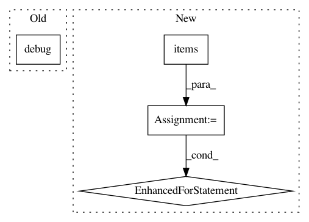

91d4af0d59877cdc19b76854f3c90ed0341a367e,src/python/pants/backend/python/subsystems/pex_build_util.py,PexBuilderWrapper,add_resolved_requirements,#PexBuilderWrapper#Any#Any#,202
Before Change
for resolved_dist in self.resolve_distributions(reqs, platforms=platforms):
requirement = resolved_dist.requirement
self._log.debug(f" Dumping requirement: {requirement}")
self._builder.add_requirement(str(requirement))
distribution = resolved_dist.distribution
self._log.debug(f" Dumping distribution: .../{os.path.basename(distribution.location)}")
After Change
distributions = self._resolve_distributions_by_platform(reqs, platforms=platforms)
locations = set()
for platform, dists in distributions.items():
for dist in dists:
if dist.location not in locations:
self._log.debug(f" Dumping distribution: .../{os.path.basename(dist.location)}")
self.add_distribution(dist)
locations.add(dist.location)
def _resolve_multi(self, interpreter, requirements, platforms, find_links):
Multi-platform dependency resolution for PEX files.
Returns a list of distributions that must be included in order to satisfy a set of requirements.
In pattern: SUPERPATTERN
Frequency: 3
Non-data size: 4
Instances
Project Name: pantsbuild/pants
Commit Name: 91d4af0d59877cdc19b76854f3c90ed0341a367e
Time: 2019-12-10
Author: john.sirois@gmail.com
File Name: src/python/pants/backend/python/subsystems/pex_build_util.py
Class Name: PexBuilderWrapper
Method Name: add_resolved_requirements
Project Name: home-assistant/home-assistant
Commit Name: 625319846c77b37a9f2a5ffcf8d3be311cd534fe
Time: 2016-10-03
Author: pascal.vizeli@syshack.ch
File Name: homeassistant/components/homematic.py
Class Name:
Method Name: _get_devices
Project Name: facebookresearch/Horizon
Commit Name: ab0f3afc45ae2b53fee03be82f4cbc037f874222
Time: 2018-05-09
Author: jjg@fb.com
File Name: ml/rl/evaluation/policy_evaluator.py
Class Name: PolicyEvaluator
Method Name: evaluate_slates